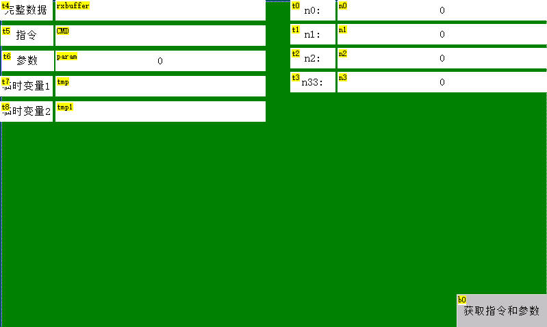
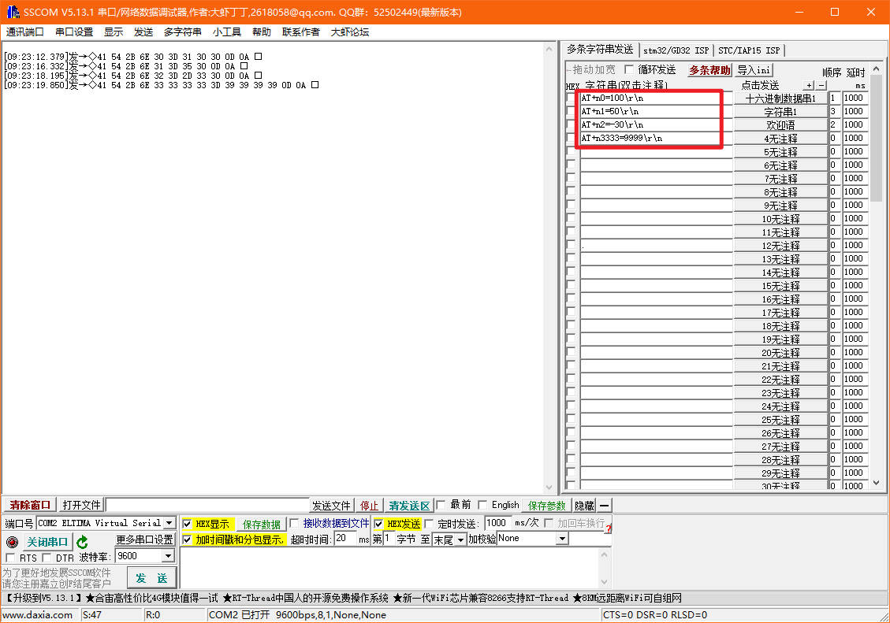

解析AT指令
注意
每个页面仅建议在一个定时器中读取串口缓冲区的数据,在多个定时器中读取串口缓冲区的数据容易照成逻辑混乱。
首先我们自定义了几个指令给屏幕赋值
AT+n0=100\r\n //给n0赋值100
AT+n1=50\r\n //给n1赋值50
AT+n2=-30\r\n //给n2赋值-30
AT+n3333=9999\r\n //给n3333赋值9999
控件是固定的n0，n1，n2，n3333，但是给他们赋值的参数是不固定的
program.s中的配置如图所示
//以下代码只在上电时运行一次,一般用于全局变量定义和上电初始化数据
//全局变量定义目前仅支持4字节有符号整形(int),不支持其他类型的全局变量声明,如需使用字符串类型可以在页面中使用变量控件来实现
int sys0=0,sys1=0,sys2=0
int length,totalLength,getFrameHead,getFrameEnd
bauds=115200 //波特率115200
recmod=1 //打开主动解析
page 0 //上电刷新第0页
界面布局如下图所示

注意
注意文本控件的txt_maxl属性，目前我都是设置为30
需要搭配sscom5.13.1使用

解析定时器（tim为50）中的代码如下图所示
while(usize>=2&&getFrameHead==0)
{
if(u[0]==0x41&&u[1]==0x54)
{
//找到帧头"AT",退出循环
getFrameHead=1
getFrameEnd=0
}else
{
//如果帧头不对，就一直删除1个字节，直到不满足条件退出循环
udelete 1
}
}
//查找帧尾\r\n
if(getFrameHead==1&&getFrameEnd==0)
{
for(sys0=2;sys0<=usize;sys0++)
{
if(u[sys0]==0x0d&&u[sys0+1]==0x0a)
{
getFrameEnd=1
length=sys0
totalLength=sys0+2
sys0=usize+1
}
}
}
//AT开头，\r\n结尾
if(getFrameHead==1&&getFrameEnd==1)
{
getFrameHead=0
getFrameEnd=0
ucopy rxbuffer.txt,0,length,0
udelete totalLength
click b0,1
if(CMD.txt=="n0")
{
n0.val=param.val
}else if(CMD.txt=="n1")
{
n1.val=param.val
}else if(CMD.txt=="n2")
{
n2.val=param.val
}else if(CMD.txt=="n3333")
{
n3.val=param.val
}
}
下面对代码进行逐行讲解
program.s中定义的变量
length：获取帧内数据长度
totalLength：通过length+结束符\r\n的长度
getFrameHead：是否获取到帧头的标志位，1为获取到帧头，0为未获取到帧头
getFrameEnd：是否获取到帧尾的标志位，1为获取到帧尾，0为未获取到帧尾
第1行为什么是判断usize>=2
代码中取“AT”作为帧头的判断标志，只要大于2字节，就有可能是AT这两个字母，当然也可以取“AT+”作为帧头的判断标志，那么第1行就是是判断usize>=3
第3-12行是判断帧头是否符合协议中的要求，如果不是，则删除串口缓冲区最前面1字节，直到找到帧头或者usize小于2
如何退出循环：当getFrameHead!=0或者usize<2,不满足while的条件，就会退出循环
第2行0x41是“A”对应的ASCII码表的16进制，0x54是“T”对应的ASCII码表的16进制
第17行，从u[2]开始查找帧尾\r\n，\r对应的ASCII码表的16进制是0x0d，\n对应的ASCII码表的16进制是0x0a
第22行，当查找到\r\n时，此时的sys0刚好就是除去\r\n的数据长度，
第23行，sys0+2则是加上\r\n的总的数据的长度
第24行，让sys0>usize,才能退出循环
第29行，已经找到了帧头和帧尾，可以开始解析了
第33行，使用ucopy指令将除了\r\n之外的数据拷贝至rxbuffer.txt进行解析
第34行，删除已经拷贝过的数据
第35行，在b0按钮中对数据进行解析，使用click去触发b0按钮，相当于调用了函数，具体如何解析请查看b0按钮
解析AT指令-样例工程下载
演示工程下载链接：